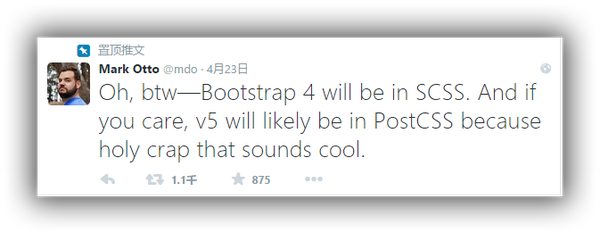

CSS预编译语言LESS的浅析
Less is More
微信
微博
凌晨
前端开发工程师
weibo:@黄金de拂晓
什么是Less？
- Less是一种动态样式语言，属于CSS预处理语言的一种，它使用类似CSS的语法，为CSS的赋予了动态语言的特性，如变量、继承、运算、函数等，更方便CSS的编写和维护。
- Less可以在多种语言、环境中使用，包括浏览器端、桌面客户端、服务端。
- Less是2009年诞生的，比他的兄弟语言Sass晚了2年（Sass是2007年），Less受Sass影响较大，语法比Sass简单而且更容易上手，因此反过来也影响了Sass演变成了Scss的时代。
Less的语言特点
- 变量 （Variables）：允许定义通用样式
- 混合（Mixins）：class中的class;
- 嵌套规则（Nested Rules）：class中嵌套class，从而减少重复的代码；
- 运算（Operations）：css中的数学计算；
- 函数和颜色功能（Color function）：可以编辑你的颜色；
- 命名空间（Namespaces）：样式分组，从而方便被调用；
- 作用域（Scope）：局部修改样式
变量（Variables）
变量允许我们单独定义一系列通用的样式，然后在需要的时候去调用。所以在做全局样式调整的时候我们可能只需要修改几行代码就可以了。
Less：
@color: #fff;
#header {
color: @color;
}
h2 {
color: @color;
}
编译后的CSS：
#header {
color: #fff;
}
h2 {
color: #fff;
}
混合（Mixins）
混合可以将一个定义好的class A轻松的引入到另一个class B中，从而简单实现class B继承class A中的所有属性。我们还可以带参数地调用，就像使用函数一样。
Less：
.bordered {
border: 1px solid black;
}
.bd-radius(@radius: 5px) {
-webkit-border-radius: @radius;
-moz-border-radius: @radius;
-ms-border-radius: @radius;
-o-border-radius: @radius;
border-radius: @radius;
}
#header {
.bordered;
.bd-radius();
}
#footer {
.bordered;
.bd-radius(10px);
}
编译后的CSS：
.bordered {
border: 1px solid black;
}
#header {
border: 1px solid black;
-webkit-border-radius: 5px;
-moz-border-radius: 5px;
-ms-border-radius: 5px;
-o-border-radius: 5px;
border-radius: 5px;
}
#footer {
border: 1px solid black;
-webkit-border-radius: 10px;
-moz-border-radius: 10px;
-ms-border-radius: 10px;
-o-border-radius: 10px;
border-radius: 10px;
}
嵌套规则（Nested Rules）
我们可以在一个选择器中嵌套另一个选择器来实现继承，这样很大程度减少了代码量，并且代码看起来更加的清晰。
Less嵌套，例1：
Less：
#header {
h1 {
font-size: 26px;
font-weight: bold;
}
p {
font-size: 12px;
a {
text-decoration: none;
&:hover {
border-width: 1px
}
}
}
}
编译后的CSS：
#header h1 {
font-size: 26px;
font-weight: bold;
}
#header p {
font-size: 12px;
}
#header p a {
text-decoration: none;
}
#header p a:hover {
border-width: 1px;
}
Less嵌套，例2：
.one {
@media (width: 400px) {
font-size: 1.2em;
@media print and color {
color: blue;
}
}
}
@media (width: 400px) {
.one {
font-size: 1.2em;
}
}
@media (width: 400px) and print and color {
.one {
color: blue;
}
}
运算（Operations）
运算提供了加，减，乘，除操作；我们可以做属性值和颜色的运算，这样就可以实现属性值之间的复杂关系。
运算，例：
@the-border: 1px;
@base-color: #111;
@red: #842210;
#header {
color: (@base-color * 3);
border-left: @the-border;
border-right: (@the-border * 2);
}
#footer {
color: (@base-color + #003300);
border-color: desaturate(@red, 10%); //饱和度降低10%
}
#header {
color: #333;
border-left: 1px;
border-right: 2px;
}
#footer {
color: #114411;
border-color: #7d2717;
}
函数（function）
- LESS中的函数一一映射了JavaScript部分代码，可以操作属性值。
- 提供了颜色相关的函数，可以通过色值来转换新的颜色。
- 提供了判断类的函数，结合条件选择关键字 when、and、 or 等可以实现一些功能强大的Mixins
字符和数学类：
- escape(@string); // 通过 URL-encoding 编码字符串
- e(@string); // 对字符串转义
- %(@string, values...); // 格式化字符串
- unit(@dimension, [@unit: ""]); // 移除或替换属性值的单位
- color(@string); // 将字符串解析为颜色值
- data-uri([mimetype,] url); // * 将资源内嵌到css中，可能回退到url()
- ceil(@number); // 向上取整
- floor(@number); // 向下取整
- percentage(@number); // 将数字转换为百分比，例如 0.5 -> 50%
- round(number, [places: 0]); // 四舍五入取整
- sqrt(number); // * 计算数字的平方根
- abs(number); // * 数字的绝对值
- sin(number); // * sin函数
- asin(number); // * arcsin函数
- cos(number); // * cos函数
- acos(number); // * arccos函数
- tan(number); // * tan函数
- atan(number); // * arctan函数
- pi(); // * 返回PI
- pow(@base, @exponent); // * 返回@base的@exponent次方
- mod(number, number); // * 第一个参数对第二个参数取余
- convert(number, units); // * 在数字之间转换
- unit(number, units); // * 不转换的情况下替换数字的单位
颜色类：
- color(string); // 将字符串或者转义后的值转换成颜色
- rgb(@r, @g, @b); // 转换为颜色值
- rgba(@r, @g, @b, @a); // 转换为颜色值
- argb(@color); // 创建 #AARRGGBB 格式的颜色值
- hsl(@hue, @saturation, @lightness); // 创建颜色值
- hsla(@hue, @saturation, @lightness, @alpha); // 创建颜色值
- hsv(@hue, @saturation, @value); // 创建颜色值
- hsva(@hue, @saturation, @value, @alpha); // 创建颜色值
- hue(@color); // 从颜色值中提取 hue 值（色相）
- saturation(@color); // 从颜色值中提取 saturation 值（饱和度）
- lightness(@color); // 从颜色值中提取 'lightness' 值（亮度）
- hsvhue(@color); // * 从颜色中提取 hue 值，以HSV色彩空间表示（色相）
- hsvsaturation(@color); // * 从颜色中提取 saturation 值，以HSV色彩空间表示（饱和度）
- hsvvalue(@color); // * 从颜色中提取 value 值，以HSV色彩空间表示（色调）
- red(@color); // 从颜色值中提取 'red' 值（红色）
- green(@color); // 从颜色值中提取 'green' 值（绿色）
- blue(@color); // 从颜色值中提取 'blue' 值（蓝色）
- alpha(@color); // 从颜色值中提取 'alpha' 值（透明度）
- luma(@color); // 从颜色值中提取 'luma' 值（亮度的百分比表示法）
颜色类：
- saturate(@color, 10%); // 饱和度增加 10%
- desaturate(@color, 10%); // 饱和度降低 10%
- lighten(@color, 10%); // 亮度增加 10%
- darken(@color, 10%); // 亮度降低 10%
- fadein(@color, 10%); // 透明度增加 10%
- fadeout(@color, 10%); // 透明度降低 10%
- fade(@color, 50%); // 设定透明度为 50%
- spin(@color, 10); // 色相值增加 10
- mix(@color1, @color2, [@weight: 50%]); // 混合两种颜色
- greyscale(@color); // 完全移除饱和度，输出灰色
- contrast(@color1, [@darkcolor: black], [@lightcolor: white], [@threshold: 43%]);
// 如果 @color1 的 luma 值 > 43% 输出 @darkcolor，否则输出 @lightcolor - multiply(@color1, @color2);
- screen(@color1, @color2);
- overlay(@color1, @color2);
- softlight(@color1, @color2);
- hardlight(@color1, @color2);
- difference(@color1, @color2);
- exclusion(@color1, @color2);
- average(@color1, @color2);
- negation(@color1, @color2);
判断类：
- iscolor(@colorOrAnything); // 判断一个值是否是颜色
- isnumber(@numberOrAnything); // 判断一个值是否是数字（可含单位）
- isstring(@stringOrAnything); // 判断一个值是否是字符串
- iskeyword(@keywordOrAnything); // 判断一个值是否是关键字
- isurl(@urlOrAnything); // 判断一个值是否是url
- ispixel(@pixelOrAnything); // 判断一个值是否是以px为单位的数值
- ispercentage(@percentageOrAnything); // 判断一个值是否是百分数
- isem(@emOrAnything); // 判断一个值是否是以em为单位的数值
- isunit(@numberOrAnything, "rem"); // * 判断一个值是否是指定单位的数值
Less的条件选择
- Less的条件语句使用有些另类，他不是我们常见的关键词if和else if之类，而其实现方式是利用关键词“when”。
- Less提供了很多类型检查函数来辅助条件表达式，例如：iscolor、isnumber、isstring、iskeyword、isurl。
- Less没有提供出类似for循环的循环语句，它是通过when来模拟出来循环功能，类似递归调用的方式。
条件选择，例1：
Less：
.mixin (@a) when (@a >= 10) {
background-color: black;
}
.mixin (@a) when (@a < 10) {
background-color: white;
}
.class1 { .mixin(12) }
.class2 { .mixin(6) }
编译后的CSS：
.class1 {
background-color: black;
}
.class2 {
background-color: white;
}
条件选择，例2：
Less：
.mixin (@a) when (iscolor(@a)) {
background-color: black;
}
.mixin (@a) when (isnumber(@a)) {
background-color: white;
}
.class1 { .mixin(red) }
.class2 { .mixin(6) }
编译后的CSS：
.class1 {
background-color: black;
}
.class2 {
background-color: white;
}
命名空间（Namespaces）
命名空间可以用于组织我们的CSS，从而提高到另一个层次，我们将一些公用的样式创建分组，然后在使用的时候直接调用。
命名空间，例：
在 #bundle 中定义一些属性集之后可以重复使用
#bundle {
.button() {
display: block;
border: 1px solid black;
background-color: grey;
&:hover { background-color: white }
}
}
在 #header a 中像这样引入 .button
#header a {
color: orange;
#bundle > .button();
}
作用域（Scope）
Less 中的作用域跟其他编程语言非常类似，首先会从本地查找变量或者混合模块，如果没找到的话会去父级作用域中查找，直到找到为止。
作用域，例：
@var: red;
#page {
@var: white;
#header {
color: @var; //white
}
}
#footer {
color: @var; //red
}
Tips：如果把最顶部的这个@var: red 去掉进行编译会怎样？
对比javascript的作用域：
var color = 'red';
var fn1 = function() {
var color = 'white';
console.log(color);
}
var fn2 = function() {
console.log(color);
}
fn1(); //white
fn2(); //red
注释
- /*这里是注释*/ （多行注释，不会被编译掉）
- //这里是注释 （单行注释，会被编译掉）
导入（Import）
在Less中，你既可以导入CSS文件，也可以导入Less文件。但只有导入的LESS文件才会被处理（编译），导入的CSS文件会保持原样。如果你希望导入一个CSS文件，保留.css后缀即可
可以强制某个文件使用特定的方式来处理，例如：
- @import (css) "lib"; （按导入css的方式，不进行处理）
- @import (less) "lib.css"; （按导入Less的方式，进行预处理）
字符串插值
变量可以用像 @{name} 这样的结构，以类似 ruby 和 php 的方式嵌入到字符串中
@base-url: "http://www.migu.cn";
background-image: url("@{base-url}/images/bg.png");
@name: blocked; //注意：这里不能带引号
.@{name} {
color: black;
}
对比es6字符串模板：
`${base-url}/images/bg.png`
避免编译
有时候我们需要输出一些不正确的 CSS 语法或者使用一些 Less 不认识的专有语法。要输出这样的值我们可以在字符串前加上一个 ~
.class {
filter: ~"ms:alwaysHasItsOwnSyntax.For.Stuff()";
}
输出成：
.class {
filter: ms:alwaysHasItsOwnSyntax.For.Stuff();
}
编译Less
- 通过GUI工具（koala）
- 通过node.js
npm install -g less lessc less/style.less css/style.css - 通过打包工具（webpack的loaders）
module: { rules: [{ test: /\.less$/, use: ExtractTextPlugin.extract({ fallback: 'style-loader', use: ['css-loader', 'postcss-loader', 'less-loader'] }) }] }
Less的瓶颈及现状
- 从词法角度讲，LESS的确是最接近CSS的，但是仅限于如此。但是不幸的是它占用了 @at-rule 关键字作为了变量标识符，使得功能扩展性大大降低
- 引入循环、条件判断。Less是通过递归解决循环的，其他语言可以使用if、else、for等关键字
- 这些缺陷在Less第一版出现时，就已经注定了这个语言的没落
-
bootstrap从2的默认less，到3的scss复制，到未来4的scss默认。也能看出Less开始慢慢淡出前端技术栈的第一梯队。

Less的实例以及常用Mixins
演示代码
Q&A